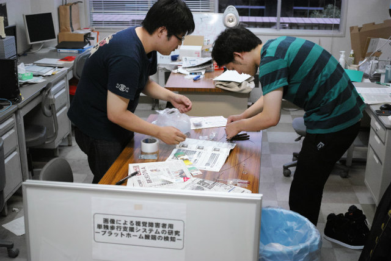

| ・ポスター掲示 (H26.08.04) | |||
A井くんがいったこの前の学会で使ったポスターを掲示しました。助教の人が掲示にあたって、面を合わせてくれとか、ワイヤーで美しくとかの要望に応えるべく、M2ムー君の補助でM1A井くんがポスター掲示でガンバリマス。現場監督はtask。 |
|||
|
準備中 |

カシメ作業 | ||
|
奥の所で挟むねん |
この辺で | ||
|
ドライバで長さ調整治具 |
こんな感じで | ||
|
わっかを通して |
圧着端子で代用 | ||
|
右のを止めよう |
ワイヤー持つ人（A井くん）、ポスター持つ人（ムー君） | ||
|
A4の裏紙は位置合わせ用 |
中のポスターがずれてる | ||
|
台紙とめ直し |
対角線の順番に | ||
|
枠にはめよう |
ここ持っとくしな | ||
|
肩のとこでドライバで |
ここで終わり | ||
|
現場責任者の検収前検査 |
水平出てる？ | ||
|
ここをこう |
なんかなぁ | ||
|
S字フックの留める位置で微調 |
他のも | ||
|
天井にはあってないけど、地球に対して水平 |
3面揃うとピシッとくるね | ||
|
全部のポスターで面が出てるし |
ワイヤーで美しく吊せた！ | ||